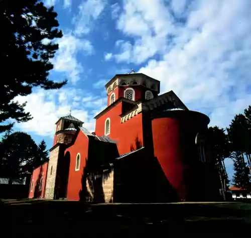

SRBIJA

Manastir Žiča nalazi se u selu Kruševici, na putu između Kraljeva i Mataruške Banje. Zadužbina je kralja Stefana Prvovenčanog. Gradnja glavne
manastirske crkve posvećene Hristovom Vaznesenju započeta je oko 1206. godine, a završena pre 1217. godine, kada je ktitor dobio kraljevsku krunu iz
Rima.
Za istoriju srpskog naroda i njegove crkve Žiča ima veliki značaj. Ovde je Sv. Sava, kao prvi arhiepiskop nezavisne srpske crkve, koja je stekla
samostalnost 1219. godine, postavio sedište srpske crkve, krunisao svog brata za kralja i posvetio episkope novoosnovanih eparhija. Tu su krunisani i
Stefanovi naslednici, sinovi Radoslav i Vladislav, rukopoložen je arhiepiskop Arsenije, prvi naslednik Sv. Save na čelu srpske crkve. Kada je sredinom
13. veka arhiepiskopski presto iz Žiče premešten u Pećku patrijaršiju, Žiča nije izgubila svoj ugled, već je on porastao, naročito u vreme pred gubitak
srpske nezavisnosti kada su u njoj boravili velikodostojnici Srpske crkve.
Krajem 13. veka manastir je stradao i početkom sledećeg veka obnavlja ga kralj Milutin. U vreme turske vlasti Žiča je nekoliko puta opustošena i
obnavljana, a današnji izgled rezultat je velikih restauratorskih zahvata između 1925. i 1935. i krajem osamdesetih godina. Po svojoj arhitekturi Žiča
pripada raškoj školi, a fasade su crvene boje po ugledu na svetogorsku arhitekturu.
Prvobitna crkva je jednobrodna građevina sa širokom polukružnom oltarskom apsidom na istočnoj strani, pripratom na zapadnoj i pravougaonim pevničkim
prostorima na južnoj i severnoj strani. Promeni prvobitnog izgleda doprineli su prostori đakonikona i proskomidije, srušen zid između naosa i priprate
i prizidane bočne kapele uz staru pripratu, kao samostalne građevine sa kupolama i polukružnim oltarskim apsidama. Žiča je zahvaljujući činjenici da je
bila sedište arhiepiskopije značajno uticala na kasnije spomenike raške škole, otvarajući put svetogorskim uticajima.
U veoma oštećenom zidnom slikarstvu raspoznaju se tri hronološko-stilske celine. Prvu čine freske nastale posle sticanja crkvene nezavisnosti, a autori
su bili carigradski majstori. Drugu celinu čine slabo očuvane freske u kapeli kule, nastale početkom četvrte decenije 13. veka. Najznačajniju celinu
čine freske nastale između 1309. i 1316. godine, koje se nalaze u glavnom delu crkve, a čine ih tematske celine: Veliki praznici, Scene iz života
Hrista, stojeće svetiteljske figure i njihova poprsja. Autori ovih fresaka su majstori poznate slikarske radionice kralja Milutina, čija su dela i
freske u Starom Nagoričanu, Bogorodici Ljeviškoj u Prizrenu i Kraljevskoj crkvi u Studenici.
Istočno od glavnog manastirskog hrama nalazi se crkva Sv. Teodora Tirona i Teodora Stratilata, iz 14. veka, jedina još očuvana građevina
srednjovekovnog manastirskog kompleksa, jednostavne arhitekture i plemenitih proporcija, obnovljena krajem 18. veka.
Manastir Žiča nalazi se na Putu kulture Transromanika.